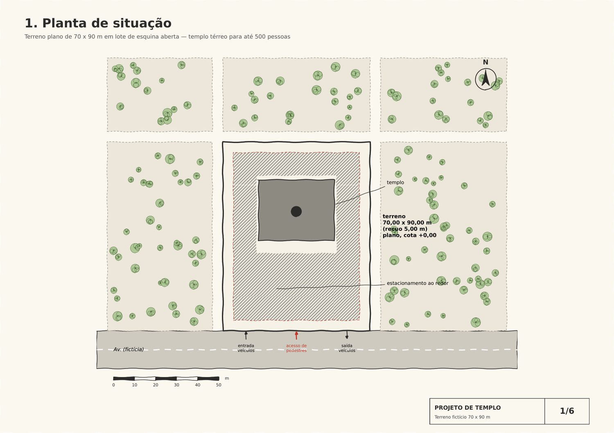
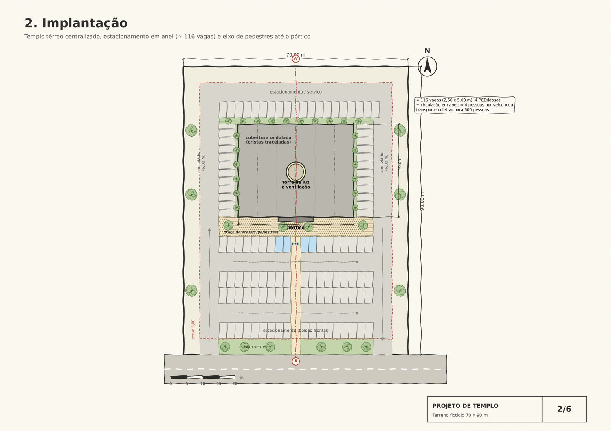
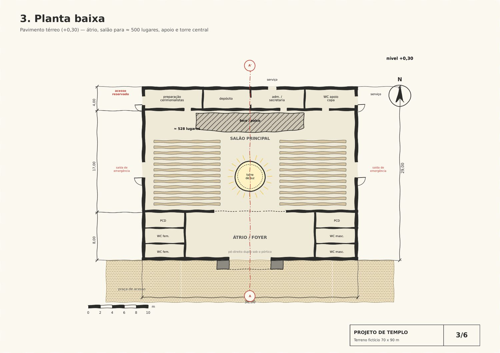
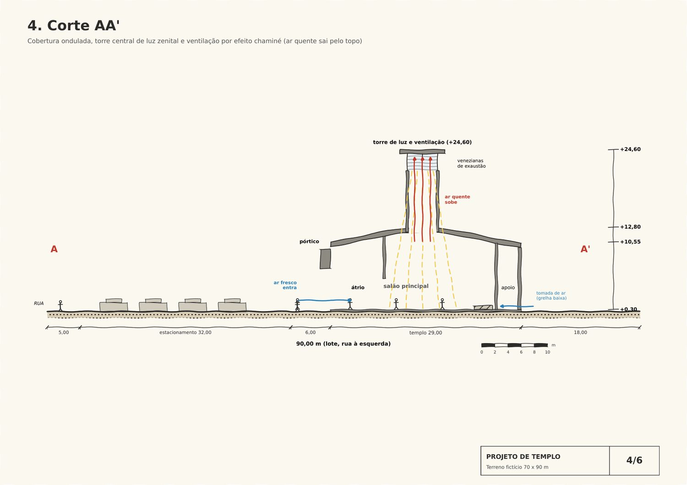
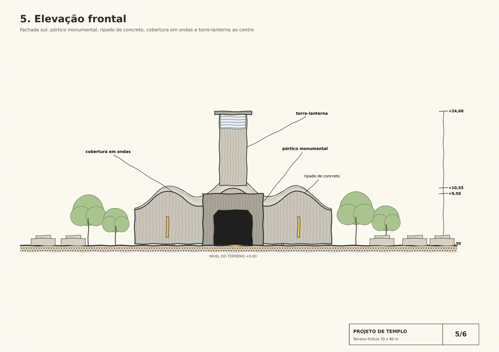
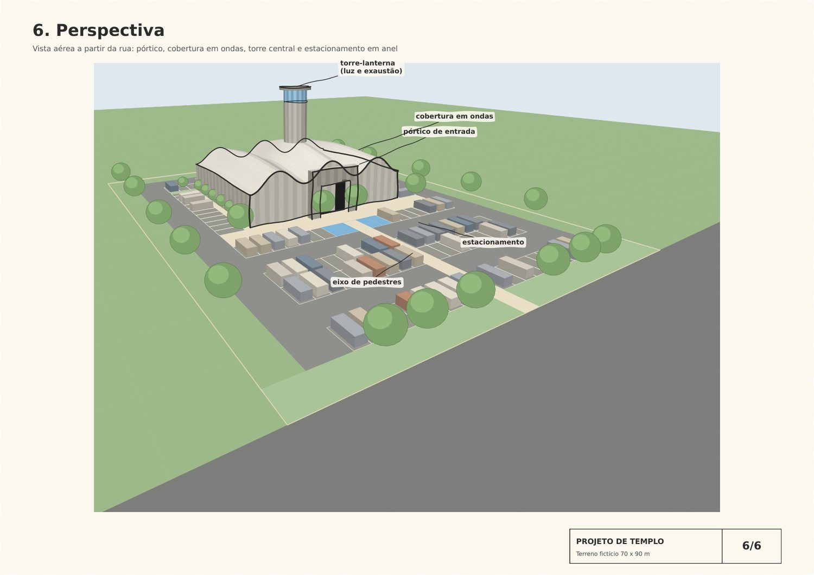
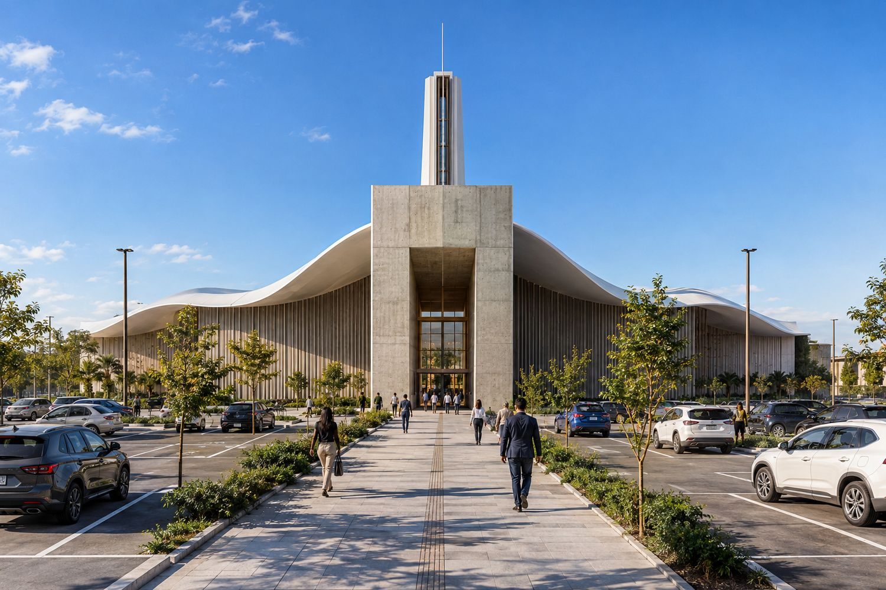
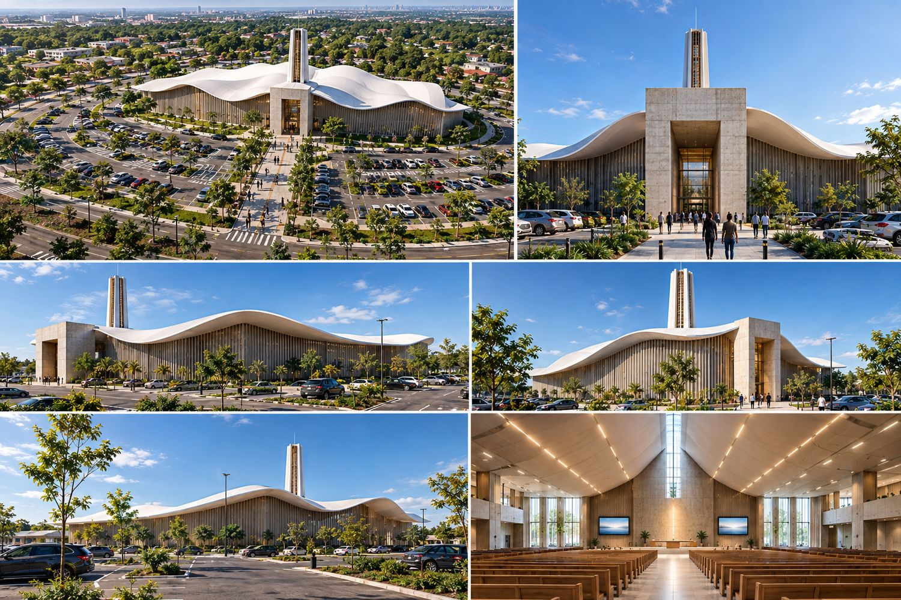
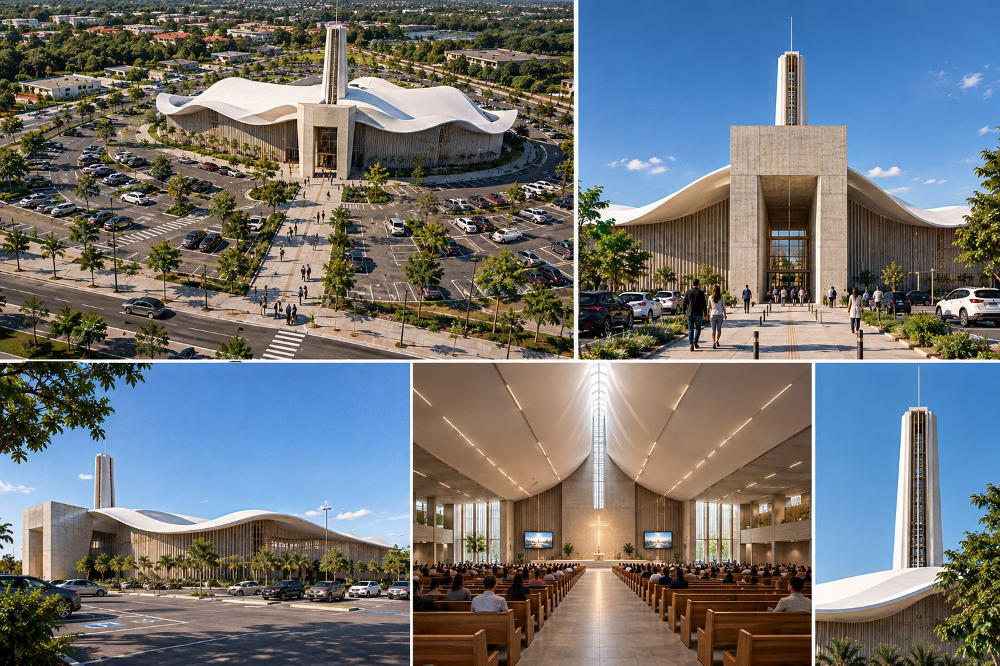

Maquete em construção
Templo
Um espaço para todas as crenças, térreo, com cobertura em ondas e uma torre que ilumina e ventila o salão.

70×90 mterreno
36×29 mplanta do templo
528lugares no salão
116vagas, 4 PCD
24,6 maltura da torre
A ideia
Sem símbolo de uma religião só. A identidade vem da forma.
- Térreo
- Sem desníveis. Quem chega da calçada segue por um eixo de pedestres até o pórtico, sem cruzar os carros.
- Pórtico
- Entrada monumental em concreto aparente, 11 × 9,5 m, com abertura de 7 × 6,5 m e vidro por trás.
- Cobertura em ondas
- Pensada para ser vista de cima. Sua altura varia de +6,4 a +12,8 m e é a assinatura do projeto.
- Torre de luz
- Cilindro de 5 m de diâmetro no centro do salão. O ar quente sobe e sai pelas venezianas do topo, o ar fresco entra por baixo, e a luz natural cai de cima.
- Estacionamento
- 116 vagas em volta do templo. Os carros entram pela esquerda e saem pela direita. A conta supõe cerca de 4 pessoas por veículo, ou parte do público chegando de transporte coletivo.
- Salão
- Átrio com banheiros e acesso para PCD, salão principal para cerca de 500 pessoas, palco e salas de apoio.
Do croqui ao projeto
As seis pranchas pedidas pelo professor, em croqui.






Imagens de referência
Vistas geradas a partir do projeto.



Maquete
Escala 1:150, sobre uma base de cerca de 50 × 63 cm.
| Elemento | Real | Na maquete | Material |
|---|---|---|---|
| Templo | 36 × 29 m | 24 × 19 cm | Nervuras de papelão e casca de cartolina branca |
| Torre | Ø 5 × 24,6 m | Ø 3,3 × 16,4 cm | Tubo com faixa de acetato |
| Pórtico | 11 × 9,5 m | 7,3 × 6,3 cm | Foam board e papel concreto |
| Fachada | — | — | Kraft com ripas de balsa |
Fotos e vídeos da montagemA maquete está em construção. As fotos e os vídeos entram aqui conforme ela avança.
Arquivos
Para baixar ou imprimir.